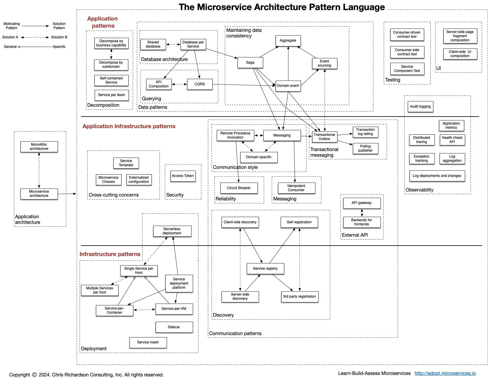

Microservicios
Temas de COMPNU · 5/6
5.1 Del monolito a los servicios
5.1.1 Arquitecturas monolíticas
Tradicionalmente las aplicaciones empresariales se construían como monolitos: se dividían en capas, pero todas formaban parte de una única aplicación.
Tienen ventajas claras: son simples de desarrollar, probar y desplegar, y el rendimiento depende solo de la aplicación, no de sistemas intermedios. Pero también problemas: escalar es complicado (hay que replicar todo), los despliegues y actualizaciones son arriesgados y lentos, la resiliencia es baja (un fallo en cualquier parte del código afecta a todo) y quedas atado a unas tecnologías concretas.
5.1.2 Arquitecturas orientadas a servicios (SOA)
SOA supone un cambio de paradigma: en vez de pensar en aplicaciones, se piensa en componentes que colaboran para un fin. La aplicación se parte en componentes más pequeños, cada uno con una funcionalidad específica y una interfaz muy bien definida. Sus principios:
- Contratos estandarizados, que ocultan la implementación.
- Bajo acoplamiento: cada servicio depende lo mínimo de otros.
- Abstracción: los servicios son cajas negras.
- Reusabilidad: servicios aprovechables en varias aplicaciones.
- Autonomía: control absoluto de cada servicio sobre sus datos y su lógica.
- Descubribilidad (discoverability): un registro donde los consumidores encuentran los contratos.
- Componibilidad: combinar servicios para crear flujos de negocio más complejos.
5.1.3 SOA tradicional: SOAP y REST
Históricamente SOA se implementó con SOAP (protocolo propio) y ficheros WSDL/XML, lo que lo hacía pesado e incómodo. La comunicación pasaba por un bus centralizado (ESB, Enterprise Service Bus) que era el "cerebro" del sistema: enrutaba y transformaba mensajes y orquestaba las llamadas.
Las arquitecturas modernas migran a REST, que no es un protocolo: reutiliza toda la pila HTTP y formatos ligeros como JSON. La lógica pasa del ESB a los endpoints y la comunicación se reduce a mensajes HTTP simples. REST es mucho más sencillo y ligero, pero no resuelve del todo el problema del monolito.
5.2 Arquitecturas de microservicios
Los microservicios no son una arquitectura nueva, sino una forma de implementar SOA que lleva la simplicidad de REST un paso más allá. La diferencia clave: cada microservicio es dueño de sus datos. Dos definiciones clásicas:
"Una aproximación para desarrollar una aplicación como un conjunto de servicios pequeños, cada uno ejecutándose en su propio proceso y comunicándose mediante mecanismos ligeros." — Martin Fowler y James Lewis
"Servicios pequeños y autónomos que trabajan en común." — Sam Newman
Para entenderlo mejor
MONOLITOS VS MICROSERVICIOS en 10 MINUTOS — comparación de ambos enfoques (vídeo, 11 min). Microservices — Martin Fowler — el artículo original de Fowler y Lewis (artículo, inglés).
5.2.1 Principios
Heredan los de SOA (desacoplamiento, autonomía, reusabilidad, componibilidad…) y añaden restricciones propias:
- Tamaño pequeño y enfoque único: cada servicio hace una sola cosa, y bien. Se aplica la "regla de las dos pizzas" de Jeff Bezos: el equipo que mantiene un microservicio debe poder cenar con dos pizzas.
- Un servicio = una base de datos: principio fundamental y a menudo el más difícil. Cada microservicio es propietario exclusivo de su BD, no compartida; si otro necesita esos datos, los pide al servicio, nunca a la BD directamente. Así el acoplamiento es mínimo.
- Despliegue independiente: el mayor beneficio. Cada microservicio se despliega (o se replica según la demanda) sin que los demás se enteren.
- Endpoints inteligentes, conexiones simples (smart endpoints, dumb pipes): la comunicación usa protocolos sencillos (HTTP o mensajería) y se prescinde del ESB y toda su lógica.
- Libertad tecnológica y agnosticismo del lenguaje: al estar desacoplados, cada uno usa la tecnología más apropiada y se comunican mediante APIs neutras, normalmente JSON.
- Automatización (DevOps): tantas aplicaciones independientes (cada una con su BD) complican el despliegue, así que es imprescindible automatizar: integración continua, despliegue continuo, contenedores…
- Servicios sin estado: sin esto no se podrían escalar ni automatizar los despliegues sin problemas de sincronización de estado.
5.2.2 Comunicación entre microservicios
Los microservicios se hablan por la red, de dos maneras:
| Síncrona (petición/respuesta) | Asíncrona (eventos) | |
|---|---|---|
| Cómo | A llama a B (REST o RPC) y se bloquea hasta la respuesta | A hace su trabajo y publica un evento en un canal (Kafka, RabbitMQ) sin esperar; B escucha el canal y procesa los eventos dirigidos a él |
| Ventaja | Simple y universal | Desacoplamiento total |
| Riesgo | Acoplamiento temporal: si B falla, A falla | Trazabilidad: difícil seguir qué pasó |
Analogía
La síncrona es una llamada de teléfono: si el otro no contesta, te quedas colgado esperando. La asíncrona es dejar una carta en un buzón: sigues con tu día y el destinatario la lee cuando puede, pero no sabes exactamente cuándo ni si la ha leído.
5.2.3 Retos
La complejidad sale del monolito y se traslada a la comunicación entre componentes. Surgen preguntas nuevas: ¿cómo gestiono la configuración de muchos servicios?, ¿cómo sabe cada servicio dónde están los otros?, ¿qué pasa si uno no responde?, ¿fallos en cadena?, ¿a qué servicio llama la interfaz?, ¿quién gestiona lo transversal (autenticación, logs)?, ¿cómo mantengo la consistencia si una transacción afecta a varios servicios?, ¿cómo agrego resultados de varios servicios?, ¿cómo sé cuál falló en una cadena de llamadas distribuidas? La respuesta son patrones de diseño específicos para microservicios.
5.3 Patrones de microservicios
Cada patrón responde a uno de los retos anteriores:
| Patrón | Problema | Solución |
|---|---|---|
| Externalized Configuration | Hardcodear parámetros (IPs, claves criptográficas) en cada servicio no es recomendable | Un servidor de configuración centralizado al que los servicios acuden al arrancar. Un cambio en un solo sitio llega a todos sin redesplegar |
| Microservice Chassis | Cada servicio necesita mucho boilerplate: inicialización, logs, pruebas de vida, métricas, acceso a la configuración… | Un framework que dé todo eso out-of-the-box para centrarse en la lógica de negocio |
| Service Discovery & Registry | Con despliegues dinámicos, ¿cómo sabe un servicio a dónde llamar? | Un registro donde los servicios se dan de alta al arrancar y donde se consulta la ubicación de los demás. Evita hardcodear direcciones |
| API Gateway | El cliente no puede conocer la ubicación de todos los microservicios; ¿y quién gestiona autenticación, SSL, enrutamiento? | Una puerta de entrada única que centraliza el acceso y las tareas transversales |
| Circuit Breaker | Un servicio caído no debe contagiar a los sanos (fallos en cadena) | Un interruptor automático que corta las llamadas al detectar fallos; tras un tiempo deja pasar alguna de prueba: si va bien reabre la comunicación, si no vuelve a cortar y reintenta más tarde |
| Database per Service | Garantizar que solo el propietario accede a sus datos | Cada microservicio tiene una BD independiente y aislada a la que solo él accede |
| Saga | Transacciones distribuidas que abarcan varios microservicios | Transacciones locales y, si una falla, transacciones compensatorias que deshacen lo ya confirmado. Por coreografía (los servicios reaccionan a eventos) u orquestación (un servicio central llama al resto en orden) |
| Transactional Outbox | En una saga, el servicio puede caer después de actualizar la BD pero antes de publicar el evento: BD y cola quedan inconsistentes | Guardar el evento en una tabla de la propia BD dentro de la misma transacción; un proceso aparte vigila esa tabla y publica los eventos de forma fiable |
| CQRS (Command Query Responsibility Segregation) | ¿Cómo hago una consulta que necesita datos de varios microservicios? | Vistas de solo lectura con datos desnormalizados de varios servicios, actualizadas escuchando sus eventos. Las consultas van a esa BD optimizada: se separan lecturas de escrituras |
Analogía: Transactional Outbox
En vez de anotar el pedido en el libro y luego correr a avisar al repartidor (y arriesgarte a tropezar entre una cosa y otra), escribes el aviso en la misma hoja del libro. Un empleado repasa el libro y entrega los avisos pendientes: si está escrito, se enviará seguro.
Para entenderlo mejor
Pattern: CQRS — microservices.io — explicación del patrón con ejemplo (artículo, inglés).
Hay muchos más patrones, recogidos en el catálogo de Chris Richardson:

Fuente: microservices.io/patterns. Los patrones se agrupan por problema: descomposición, datos, comunicación, despliegue, observabilidad, seguridad…5.4 ¿Microservicios sí o no?
Los microservicios no son una bala de plata: añaden una enorme complejidad de gestión e infraestructura.
| Úsalos si… | No los uses si… |
|---|---|
| Tienes un equipo grande que puede trabajar en paralelo | Tienes un equipo pequeño |
| Necesitas escalar partes de la aplicación por separado | La aplicación es simple |
| Necesitas despliegues rápidos y autónomos | Estás en fases iniciales del desarrollo |
| Quieres mezclar stacks tecnológicos |
5.x Ideas clave
- Monolito: simple de desarrollar, probar y desplegar; pero difícil de escalar, despliegues arriesgados, baja resiliencia y atado a una tecnología.
- SOA: componentes con interfaz bien definida; principios: contratos, bajo acoplamiento, abstracción, reusabilidad, autonomía, descubribilidad, componibilidad. Clásicamente SOAP + WSDL + ESB (pesado) → REST (ligero, lógica en los endpoints).
- Microservicios = forma de implementar SOA: servicios pequeños, autónomos, en su propio proceso, con mecanismos ligeros, cada uno dueño de sus datos.
- Principios: enfoque único (regla de las dos pizzas), una BD por servicio, despliegue independiente (mayor beneficio), smart endpoints, dumb pipes, libertad tecnológica, DevOps, sin estado.
- Comunicación síncrona (simple, acoplamiento temporal) vs asíncrona con Kafka/RabbitMQ (desacoplada, difícil de trazar).
- Patrones: Externalized Configuration, Chassis, Service Discovery, API Gateway, Circuit Breaker, Database per Service, Saga, Transactional Outbox, CQRS.
- No son bala de plata: para equipos grandes y escalado independiente; no para equipos pequeños, apps simples o fases iniciales.